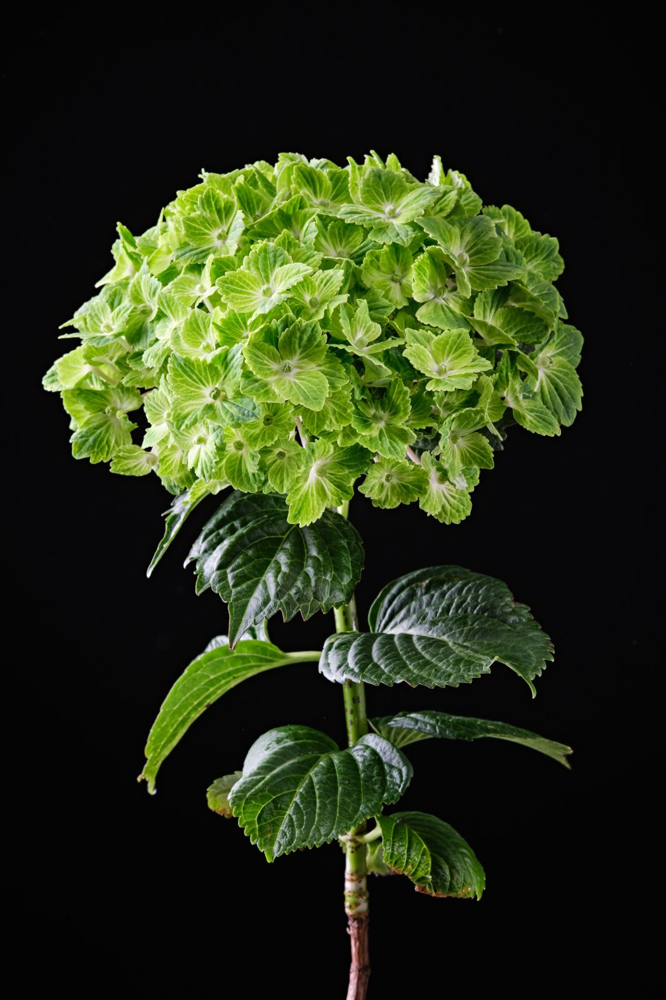
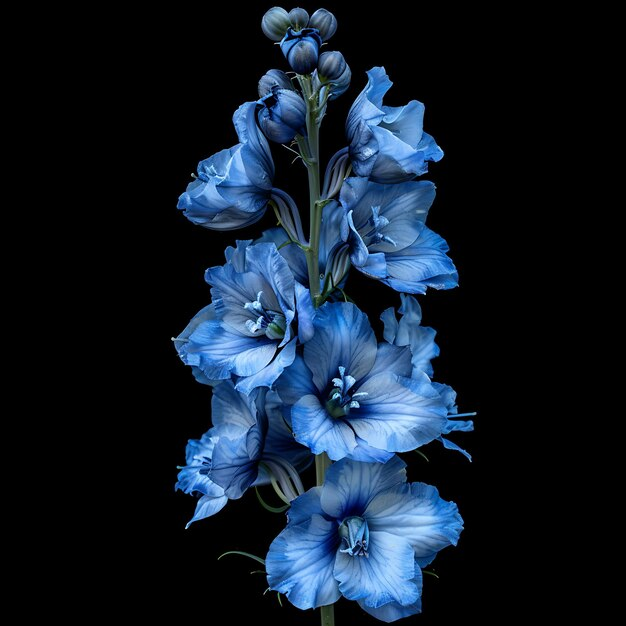
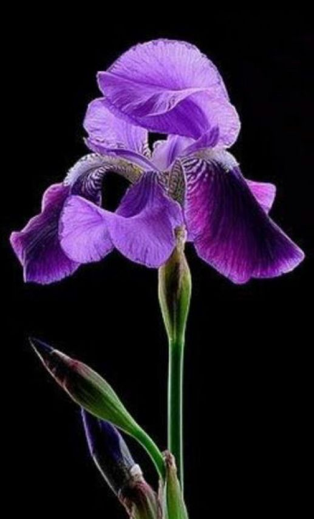

Green flowers symbolize growth and renewal. They are often associated with nature and tranquility.
There are more than 30 variations of green flowers. Some popular green flowers include bells of ireland, green hydrangeaws, echinacea, dianthus, zinnias, and chrysanthemums.

Blue flowers symbolize serenity and trust. They are often associated with the sky and the ocean.
There are more than 20 variations of blue flowers. Some popular blue flowers include larkspurs, salvia, grape hyacinthsand forget-me-nots.

Purple flowers symbolize royalty and luxury. They are often associated with elegance and sophistication.
There are more than 10 variations of purple flowers. Some popular purple flowers include lavenders, orchids, petunias, and clematis.